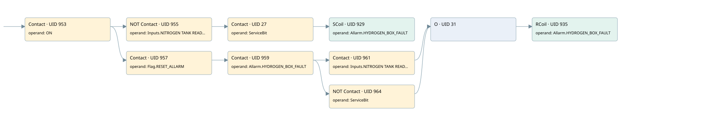

hydrogen box not ready
allarms 3 · 검색 색인 순서 12 · 원본 내부 NID 추정 12
백업 PLF 원본의 3177675 바이트 위치에서 복원한 XML. 검색 문서 1990의 객체 키 161022007c6b000000000000와 연결했다. 이름 해석 9/9개. 남은 RefId는 상수 또는 미해석 참조다.
연결 구조 다시 그리기
원본 Part/PCon/Wire를 이용한 연결도다. TIA 화면의 래더 배치 또는 실행 결과를 재현한 그림은 아니다. 핀 연결은 아래 표와 원본 XML을 기준으로 읽는다. 노드 위에 마우스를 두면 피연산자 이름을 볼 수 있다.

접점·코일·블록과 피연산자
| Part UID | Gate | Negated 핀 | 연결 피연산자 |
|---|---|---|---|
| 953 | Contact | operand = ON | |
| 955 | Contact | operand | operand = Inputs.NITROGEN TANK READY |
| 27 | Contact | operand = ServiceBit | |
| 929 | SCoil | operand = Allarm.HYDROGEN_BOX_FAULT | |
| 957 | Contact | operand = Flag.RESET_ALLARM | |
| 959 | Contact | operand = Allarm.HYDROGEN_BOX_FAULT | |
| 961 | Contact | operand = Inputs.NITROGEN TANK READY | |
| 964 | Contact | operand | operand = ServiceBit |
| 31 | O | ||
| 935 | RCoil | operand = Allarm.HYDROGEN_BOX_FAULT |
접점 경로를 펼친 조건식
Contact·O/A·비교기의 원본 연결을 읽기 쉽게 펼친 보조 해석이다. POWER는 전원 레일 시작을 뜻한다. 호출 블록·에지·타이머의 내부 동작과 다중 쓰기 순서는 이 표로 실행 검증하지 않았다. 미해석 핀과 RefId는 원문 연결표에서 확인한다.
| UID | 동작 | 대상 | 원본 접점 경로 | 내용 |
|---|---|---|---|---|
| 929 | SCoil | Allarm.HYDROGEN_BOX_FAULT | ((ON AND NOT [Inputs.NITROGEN TANK READY]) AND ServiceBit) | 조건 성립 시 Set |
| 935 | RCoil | Allarm.HYDROGEN_BOX_FAULT | ((((ON AND Flag.RESET_ALLARM) AND Allarm.HYDROGEN_BOX_FAULT) AND Inputs.NITROGEN TANK READY) OR (((ON AND Flag.RESET_ALLARM) AND Allarm.HYDROGEN_BOX_FAULT) AND NOT [ServiceBit])) | 조건 성립 시 Reset |
원본 배선 연결
| Wire UID | 동일 Wire 연결 끝점 |
|---|---|
| 963 | Powerrail {} ↔ Part 953.in |
| 943 | ORef 936 (ON) ↔ Part 953.operand |
| 954 | Part 953.out ↔ Part 955.in ↔ Part 957.in |
| 944 | ORef 937 (Inputs.NITROGEN TANK READY) ↔ Part 955.operand |
| 25 | Part 955.out ↔ Part 27.in |
| 26 | ORef 28 (ServiceBit) ↔ Part 27.operand |
| 29 | Part 27.out ↔ Part 929.in |
| 946 | ORef 938 (Allarm.HYDROGEN_BOX_FAULT) ↔ Part 929.operand |
| 947 | ORef 939 (Flag.RESET_ALLARM) ↔ Part 957.operand |
| 958 | Part 957.out ↔ Part 959.in |
| 948 | ORef 940 (Allarm.HYDROGEN_BOX_FAULT) ↔ Part 959.operand |
| 30 | Part 959.out ↔ Part 961.in ↔ Part 964.in |
| 949 | ORef 941 (Inputs.NITROGEN TANK READY) ↔ Part 961.operand |
| 962 | Part 961.out ↔ Part 31.in1 |
| 35 | ORef 36 (ServiceBit) ↔ Part 964.operand |
| 34 | Part 964.out ↔ Part 31.in2 |
| 33 | Part 31.out ↔ Part 935.in |
| 951 | ORef 942 (Allarm.HYDROGEN_BOX_FAULT) ↔ Part 935.operand |
식별자 해석 근거 9개
| ORef UID | RefId | 이름 | IdentXmlPart 파일 | 해석 방법 |
|---|---|---|---|---|
| 936 | 1 | ON | 0686-IdentXmlPart.xml | UID/RID + search-text + NID agreement |
| 937 | 138 | Inputs.NITROGEN TANK READY | 0684-IdentXmlPart.xml | UID/RID + search-text + NID agreement |
| 28 | 161 | ServiceBit | 0686-IdentXmlPart.xml | UID/RID + search-text + NID agreement |
| 938 | 102 | Allarm.HYDROGEN_BOX_FAULT | 0684-IdentXmlPart.xml | UID/RID + search-text + NID agreement |
| 939 | 24 | Flag.RESET_ALLARM | 0684-IdentXmlPart.xml | UID/RID + search-text + NID agreement |
| 940 | 102 | Allarm.HYDROGEN_BOX_FAULT | 0684-IdentXmlPart.xml | UID/RID + search-text + NID agreement |
| 941 | 138 | Inputs.NITROGEN TANK READY | 0684-IdentXmlPart.xml | UID/RID + search-text + NID agreement |
| 36 | 161 | ServiceBit | 0686-IdentXmlPart.xml | UID/RID + search-text + NID agreement |
| 942 | 102 | Allarm.HYDROGEN_BOX_FAULT | 0684-IdentXmlPart.xml | UID/RID + search-text + NID agreement |
검색 코드 보조 자료
참조 명칭을 찾기 위한 자료이며 실행 순서나 AND/OR 관계는 위 연결표로 확인한다.
"on" "inputs"."nitrogen tank ready" "servicebit" "allarm".hydrogen_box_fault "flag".reset_allarm "allarm".hydrogen_box_fault "inputs"."nitrogen tank ready" "allarm".hydrogen_box_fault "servicebit"